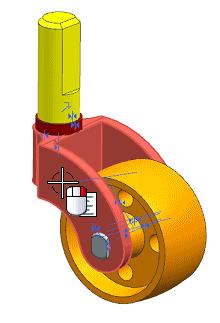
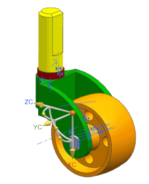

在图形窗口中，右击 des03_caster3_fork 组件并选择移动。

在移动组件对话框的变换组中，确保运动是设置为动态。

拖动原点手柄以移动 des03_caster3_fork。
如果您应用的装配约束正确，des03_caster3_wheel、des03_caster3_axle以及des03_caster3_bushing将和 des03_caster3_fork 一起移动。
在移动组件对话框中，点击取消以将组件放回原来的位置。
在移动组建信息框中，点击是来确定将未应用的更改丢弃。